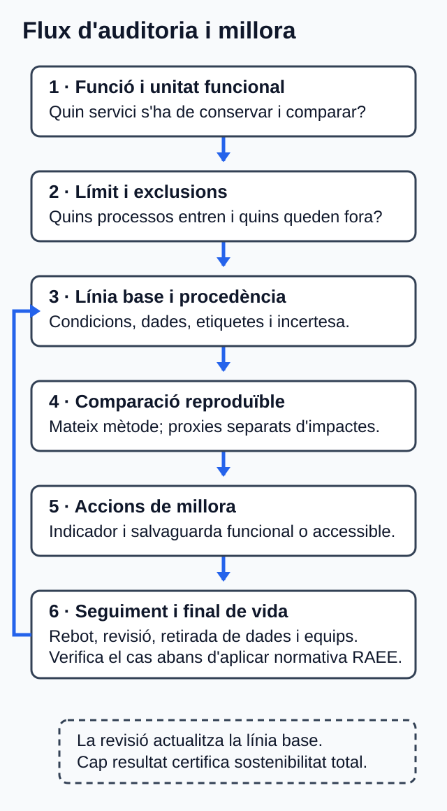

U05. Pràctiques sostenibles en el cicle de vida web¶
Com treballar esta unitat¶
Primer, orienta't; després, practica. No cal memoritzar els detalls abans de saber quin producte elaboraràs.
- Orientació. Consulta el propòsit, els prerequisits i el temps orientatiu.
- Idees clau. Llig els blocs de contingut i contrasta'ls amb el cas guiat.
- Acció. Revisa l'activitat i els criteris d'èxit abans de començar el producte.
- Comprovació. Respon l'autoavaluació i obri el solucionari després.
Per a avançar:
conserva els dubtes i usa la proposta de tutoria o el treball autònom equivalent. El canal docent concret l'ha de confirmar el centre.
La informació curricular, la traçabilitat i les referències completes es pot consultar al final de la pàgina en seccions desplegables.
Idees clau per començar
Este resum procedeix literalment del material de la unitat; el desenrotllament complet apareix més avall.
Resum¶
- Una auditoria DAW comença per la funció, la unitat funcional, el límit, la línia base i l'inventari.
- Economia verda inclusiva i economia circular són conceptes relacionats, però no sinònims.
- La comparació només és vàlida si conserva funció, condicions, unitat i mètode.
- Peticions, bytes, temps i CPU són indicadors intermedis, no impactes finals.
- RA5.d requerix una avaluació explícita, separada dels proxies, per a les activitats personals i professionals, amb categories, dades o absències, mètode, incertesa i conclusió delimitada.
- Les dades han d'identificar procedència, context, omissions i incertesa.
- L'ecodisseny vincula un problema, una decisió, un indicador i una salvaguarda.
- El pla de millora necessita seguiment i revisió de l'efecte rebot.
- El cicle de vida web inclou concepció, construcció, desplegament, operació, manteniment, retirada de dades i final de vida dels equips.
- La normativa RAEE només s'aplica després de verificar territori, objecte, estat i rol; no certifica la sostenibilitat del servici web.
Referències completes i fonts
Referències¶
Dates de consulta: les indicades per a cada font en el dossier documental d'U05 (30.07.2026; i 31.07.2026 per a les reverificacions N-RES-01 i N-RAEE-02–04 i 06). Els identificadors entre claudàtors conserven els del dossier.
- [CV-D114] Consell de la Generalitat Valenciana. Decret 114/2025, de 29 de juliol; DOGV-V-2025-29742. Annex IX, p. 119. https://dogv.gva.es/datos/2025/08/04/pdf/2025_29742_va.pdf
- [EST-RD659] Govern d'Espanya; Ministeri d'Educació i Formació Professional. Reial decret 659/2023, de 18 de juliol; BOE-A-2023-16889. Article 100 i annex VIII, mòdul 1708. Text consolidat amb última actualització publicada el 06.05.2025. https://www.boe.es/eli/es/rd/2023/07/18/659/con
- [CV-D95] Consell de la Generalitat Valenciana. Decret 95/2026, de 19 de juny; DOGV-V-2026-21170. Disposició final primera i annex IV, p. 97. https://dogv.gva.es/datos/2026/06/25/pdf/2026_21170_va.pdf
- [N-RES-01; N-RES-02; N-RES-VIG] Corts Generals; Prefectura de l'Estat. Llei 7/2022, de 8 d'abril, de residus i sòls contaminats per a una economia circular. Articles 8.1 i 18.1.a–e. Text consolidat del BOE, última actualització publicada el 02.04.2025. https://www.boe.es/eli/es/l/2022/04/08/7/con
- [N-RAEE-01–06; N-RAEE-VIG] Govern d'Espanya; Ministeri d'Agricultura, Alimentació i Medi Ambient. Reial decret 110/2015, de 20 de febrer, sobre residus d'aparells elèctrics i electrònics. Articles 2, 3, 4.a, 13.1–2, 15.1–3, 17.2–3 i 28.1. Text consolidat del BOE, última actualització publicada l'01.04.2022. https://www.boe.es/eli/es/rd/2015/02/20/110/con
- [O-GREEN] Programa de les Nacions Unides per al Medi Ambient. About green economy, actualitzat el 24.02.2025, «Overview». https://www.unep.org/explore-topics/green-economy/about-green-economy
- [O-CIRC] Ministeri per a la Transició Ecològica i el Repte Demogràfic. Estrategia Española de Economía Circular y Planes de Acción, «Estrategia Española de Economía Circular». https://www.miteco.gob.es/es/calidad-y-evaluacion-ambiental/temas/economia-circular/estrategia.html
- [T-EF-LCA] Comissió Europea, DG Medi Ambient. Life Cycle Assessment & the EF methods, «Life Cycle Assessment» i «Environmental Impact Categories». https://green-forum.ec.europa.eu/green-business/environmental-footprint-methods/lca-ef-methods_en
- [T-EF-PEF] Comissió Europea, DG Medi Ambient. Product Environmental Footprint method, «PEF: How it works» i «Phases of a PEF study». https://green-forum.ec.europa.eu/green-business/environmental-footprint-methods/pef-method_en
- [T-EF-DATA] Comissió Europea, DG Medi Ambient. Data for Environmental Footprint methods, apartats 1–3; orientació actualitzada el juliol de 2026. https://green-forum.ec.europa.eu/green-business/environmental-footprint-methods/data-ef-methods_en
- [T-SCI-ISO] ISO/IEC JTC 1. ISO/IEC 21031:2024, edició 1, març de 2024. https://www.iso.org/standard/86612.html
- [T-SCI] Green Software Foundation, Standards Working Group. Software Carbon Intensity (SCI) Specification, versió 1.1.0, 2024, «Procedure» i apartats metodològics. https://sci.greensoftware.foundation/
- [T-WSG-MET; T-WSG-DEV; T-WSG-LIFE; T-WSG-STAT] W3C Sustainable Web
Interest Group. Web Sustainability Guidelines,
Group Note Draft, 29.07.2026. És un esborrany no avalat pel W3C ni pels seus membres i no garantix compliment legal. https://www.w3.org/TR/2026/DNOTE-web-sustainability-guidelines-20260729/ - [T-IPCC] IPCC, Grup de Treball III. Climate Change 2022: Mitigation of Climate Change, capítol 5, especialment 5.3.1.2 i 5.3.4.1. https://www.ipcc.ch/report/ar6/wg3/chapter/chapter-5/
- [T-WCAG] W3C Accessibility Guidelines Working Group. Web Content Accessibility Guidelines (WCAG) 2.2, Recomanació W3C de 12.12.2024, criteris 1.1.1, 1.3.3 i 1.4.1. https://www.w3.org/TR/2024/REC-WCAG22-20241212/
Glossari de consulta
Glossari¶
| Terme | Definició |
|---|---|
| AEE usat | Aparell elèctric o electrònic utilitzat que no és residu perquè no es rebutja i es pretén un ús posterior. |
| Cicle de vida | Etapes des dels recursos i la creació fins a ús, manteniment, disposició, reciclatge o recuperació. |
| Dada primària | Dada recollida, mesurada o estimada directament sobre un procés controlat, amb context i mètode. |
| Dada secundària | Dada externa emprada normalment per a processos no controlats, amb font i representativitat declarades. |
| Ecodisseny web | Integració de criteris ambientals i de cicle de vida en funció, experiència d'ús, codi, dades, infraestructura, manteniment i retirada. |
| Economia circular | Model que manté el valor de productes, materials i recursos i minimitza els residus. |
| Economia verda inclusiva | Economia que millora benestar i equitat social mentre reduïx riscos i escassetats ambientals. |
| Efecte rebot | Augment de demanda o consum que reduïx o anul·la el benefici esperat d'una millora d'eficiència. |
| Indicador intermedi | Variable de rendiment o activitat relacionada amb recursos, però no equivalent automàticament a impacte ambiental. |
| Jerarquia de residus | Orde que l'article 8.1 de la Llei 7/2022 dirigix a les autoritats competents en polítiques i legislació; pot orientar voluntàriament una decisió, però no és per si mateix un deure directe general de l'empresa usuària. |
| Límit del sistema | Components i processos que una avaluació inclou o exclou. |
| Línia base | Versió, configuració, càrrega, període i condicions de la situació inicial. |
| RAEE | AEE que ha passat a ser residu, inclosos els components, subconjunts i consumibles presents quan es rebutja. |
| SCI | Taxa d'emissions d'un sistema de programari per unitat funcional: (O + M) per R. |
| Unitat funcional | Mesura definida de la funció respecte de la qual s'expressa l'impacte o l'activitat. |
Solucionari raonat (obri'l després de respondre)
Solucionari raonat¶
- Circular, però no necessàriament verda inclusiva. La reutilització manté el valor del producte i evita o retarda el residu. Per a afirmar també la dimensió verda inclusiva caldria valorar benestar, equitat i riscos; no basta l'acció material [O-GREEN; O-CIRC].
- Prevenció → preparació per a la reutilització → reciclatge → una altra valorització → eliminació. És l'orde que l'article 8.1 de la Llei 7/2022 dirigix a les autoritats competents en polítiques i legislació; no imposa per si mateix este orde com a deure directe general a l'empresa usuària [N-RES-01].
- Només una reducció de l'indicador de transferència en les condicions declarades: 1 MB absolut i 50 % relatiu. No pots convertir-la en energia, CO2e o impacte total sense mètode i dades addicionals [T-WSG-MET; T-SCI].
- No. SCI necessita emissions operatives
O = E × I, emissions incorporades assignadesM, unitat funcionalR, límit i mètode. Els indicadors disponibles poden registrar-se, però no omplir els buits per inferència [T-SCI]. - Per a comparar la mateixa funció. Si canvien la funció, la càrrega o el mètode, el canvi observat podria deure's a eixes diferències i no a la millora.
- Exemple: una pàgina més lleugera facilita més visites i augmenta la transferència total. Cal seguir transferència per visita i nombre total de visites o transferència total [T-IPCC].
- No. Si no es rebutja i hi ha intenció d'ús posterior, continua sent AEE usat; l'antiguitat no el convertix per si sola en RAEE [N-RAEE-01–03].
- Lliurar-lo per una via habilitada. Pot ser una entitat local,
distribuïdor, xarxa del productor d'AEE o gestor autoritzat. No s'ha d'abandonar
ni lliurar a un operador no registrat. Ser usuària professional no permet
classificar-lo, sense més fets, com a RAEE professional. L'usuària pot exigir
acreditació; si lliura a un gestor, este ha de subministrar justificant.
Guardar-lo és una
RECOMANACIO_PRUDENT, no un deure legal general [N-RAEE-01–04 i 06]. - Perquè perd una funció necessària per a part de les persones usuàries. L'ecodisseny no justifica suprimir accessibilitat; els recursos no textuals requerixen una alternativa equivalent [T-WCAG, criteri 1.1.1].
- Com a mínim: àmbit i activitat; categories d'impacte considerades; límit; dades disponibles i absències; mètode; incertesa, i conclusió qualitativa delimitada. Les peticions i la transferència s'hi poden anotar com a proxies, però no substituïxen l'avaluació ni permeten afirmar una reducció d'impacte total [T-EF-PEF; T-EF-DATA; T-WSG-MET].
Informació curricular i traçabilitat
Orientació¶
Què aprendràs¶
En esta unitat auditaràs una activitat vinculada a un servici web i prepararàs un pla de millora. En acabar, podràs:
- caracteritzar el model de producció i consum d'una activitat DAW;
- distingir l'economia verda inclusiva de l'economia circular;
- delimitar el cicle de vida d'un servici web i els processos que l'integren;
- comparar una línia base i una alternativa amb un mètode reproduïble;
- diferenciar mesuraments, estimacions, models, dades secundàries i indicadors intermedis;
- aplicar ecodisseny i estratègies sostenibles sense perdre funció, accessibilitat o seguretat;
- detectar límits de les dades, impactes desplaçats i possibles efectes rebot;
- aplicar prudentment la normativa ambiental al final de vida d'un equip del cas, sense convertir l'anàlisi en assessorament legal.
El producte final és una auditoria pràctica i un pla de millora. No emetràs cap certificació ni presentaràs una estimació com si fora un mesurament.
Prerequisits¶
Abans de començar, convé recuperar d'U01–U04:
- la identificació d'impactes ambientals i socials;
- els principis d'economia circular;
- l'ecodisseny;
- la perspectiva de cicle de vida.
També necessitaràs fer percentatges senzills i interpretar una taula. No cal cap ferramenta de telemetria: l'activitat inclou un conjunt de dades textual alternatiu.
Itinerari i temps estimat¶
Les huit hores són una estimació de treball, no huit sessions ni huit dates.
| Bloc | Què faràs | Temps |
|---|---|---|
| Preparació | Llegiràs el propòsit, els CA i els límits del treball. | 0,25 h |
| 1. Models i principis | Caracteritzaràs el model de partida i distingiràs economia verda i circular. | 0,5 h |
| 2. Auditoria | Definiràs funció, unitat funcional, límit, inventari, dades i comparació. | 0,75 h |
| 3. Cicle de vida i millora | Relacionaràs processos, ecodisseny, estratègies i efecte rebot. | 0,5 h |
| 4. Normativa | Aplicaràs el test RAEE al supòsit tancat. | 0,5 h |
| Cas guiat | Seguiràs una auditoria DAW resolta. | 0,5 h |
| Activitat asíncrona | Elaboraràs i revisaràs l'auditoria i el pla de millora. | 3,5 h |
| Autoavaluació | Respondràs i contrastaràs les deu qüestions amb el solucionari. | 0,5 h |
| Tutoria o alternativa autònoma | Contrastaràs límits, dades i aplicabilitat jurídica. | 1 h |
| Total | 15 + 30 + 45 + 30 + 30 + 30 + 210 + 30 + 60 min | 480 min (8 h) |
Nota documental sobre la duració: les 30 hores del currículum bàsic estatal [EST-RD659], les 32 hores de l'annex IX curricular valencià [CV-D114] i les 34 hores de la seqüenciació específica de DAW [CV-D95] mesuren marcs diferents i no es contradiuen. Per a planificar DAW s'usen 34 hores. Les 8 hores d'U05 són una decisió interna dins d'eixa planificació i no equivalen a huit sessions.
Ruta recomanada: seguix l'orde de les seccions. No proposes millores abans de fixar la funció que s'ha de conservar, la línia base i els límits. Si tens poc de temps en una jornada, completa un bloc i registra els dubtes abans de continuar.
Organització semipresencial i accessibilitat¶
- Pots treballar només amb este document, un editor de text i una calculadora.
- Les taules no depenen del color: l'estat i la procedència de cada dada apareixen escrits.
- Si convertixes el mapa del cicle de vida en una figura, acompanya'l d'una llista ordenada equivalent. Text alternatiu proposat: «Etapes del servici web des de la concepció fins a la retirada, amb els processos inclosos, els exclosos i les dades disponibles en cada etapa».
- Si uses una explicació audiovisual pròpia, entrega també una transcripció o un guió textual amb el mateix contingut.
- Lliura les activitats digitalment en Aules (Moodle). Mantín també un registre de dubtes i decisions per a consultar-lo en la tutoria o pel canal docent disponible en l'aula.
Resultat i criteris treballats¶
RA5. «Du a terme activitats sostenibles i minimitza l'impacte que tenen en el medi ambient» [CV-D114, annex IX, p. 119].
| CA | Què hauràs de demostrar en esta unitat |
|---|---|
| RA5.a | Caracteritzar el model de producció i consum de l'activitat web auditada. |
| RA5.b | Identificar principis d'economia verda i circular pertinents. |
| RA5.c | Contrastar el model de partida i una alternativa, amb beneficis i límits. |
| RA5.d | Avaluar impactes personals i professionals amb un mètode reproduïble. |
| RA5.e | Aplicar decisions d'ecodisseny a problemes observats. |
| RA5.f | Aplicar estratègies sostenibles i preveure el seguiment i l'efecte rebot. |
| RA5.g | Analitzar el cicle de vida del servici digital i del maquinari relacionat. |
| RA5.h | Vincular processos DAW, criteris de sostenibilitat, indicadors i fonts. |
| RA5.i | Aplicar prudentment la normativa ambiental al cas RAEE delimitat. |
La formulació oficial dels nou CA es troba en el Decret 114/2025 [CV-D114,
annex IX, p. 119]. Les etiquetes RA5.a–RA5.i s'usen ací només per a la
traçabilitat.
Mapa de traçabilitat¶
| CA | Secció explicativa | Activitat o evidència | Font del dossier |
|---|---|---|---|
| RA5.a | 1.1 | Caracterització d'entrades, processos, eixides i decisions. | O-GREEN, O-CIRC, N-RES-01 |
| RA5.b | 1.2 | Principis verds i circulars diferenciats i vinculats al cas. | O-GREEN, O-CIRC, N-RES-01, N-RES-02 |
| RA5.c | 1.3 | Contrast base–alternativa amb benefici, límit i compensació possible. | T-EF-LCA, T-WSG-MET, T-IPCC |
| RA5.d | 2.1–2.5 i 5.2 | Fitxa metodològica i avaluació explícita separada dels proxies, amb categories, límits, dades o absències, mètode, incertesa i conclusió qualitativa per a activitat personal i professional. | T-EF-PEF, T-EF-DATA, T-SCI, T-WSG-MET |
| RA5.e | 3.2 | Almenys dos decisions d'ecodisseny amb indicador i salvaguarda dins d'un pla de tres accions. | T-WSG-DEV, T-WSG-LIFE, T-WCAG |
| RA5.f | 3.3 | Pla amb acció, efecte esperat, rebot i seguiment. | N-RES-01, N-RES-02, T-SCI, T-WSG-DEV, T-IPCC |
| RA5.g | 2.2 | Mapa textual del cicle de vida amb inclusions i exclusions. | T-EF-LCA, T-EF-PEF, T-WSG-LIFE, N-RAEE-01–05 |
| RA5.h | 3.1 | Matriu de tres processos representatius, criteris, indicadors i fonts. | T-SCI, T-WSG-DEV, T-WSG-LIFE, T-EF-LCA |
| RA5.i | 4.1–4.2 | Fitxa jurídica separada dels equips A i B, amb fets, articles, acció, classe de RAEE o dada absent, modalitat documental i límits. | N-RAEE-01–06, N-RAEE-VIG, N-RES-01 |
1. Del model de partida a una alternativa sostenible¶
1.1. Caracteritzar el model, no posar-li només una etiqueta¶
Un model dominant o clàssic afavorix la generació de residus i l'escassetat de recursos i no manté necessàriament el valor de productes i materials. Un model circular procura mantindre el valor de productes, materials i recursos tant de temps com siga possible, minimitzar els residus i aprofitar els inevitables [O-GREEN; O-CIRC].
En DAW, caracteritzar el model de partida exigix descriure fluxos i decisions:
| Element | Pregunta aplicada a un servici web |
|---|---|
| Entrades | Quins equips, dades, dependències, emmagatzematge i infraestructura s'usen? |
| Processos | Com es desenrotlla, prova, desplega, opera, manté i retira el servici? |
| Eixides | Quines funcions, transferències, registres, versions i residus es generen? |
| Conservació de valor | Es manté i actualitza allò que funciona o se substituïx sense anàlisi? |
| Final de vida | Hi ha reutilització, retirada ordenada de dades i lliurament responsable dels equips? |
Per exemple, «el projecte usa una dependència» no caracteritza cap model. En canvi, «cada compilació descarrega dependències sense memòria cau, es mantenen entorns de prova inactius i es preveu substituir un monitor encara funcional sense valorar-ne el segon ús» identifica entrades, processos i decisions que es poden auditar.
1.2. Economia verda i economia circular no són sinònims¶
Una economia verda inclusiva busca millorar el benestar humà i l'equitat social mentre reduïx riscos i escassetats ambientals [O-GREEN]. L'economia circular se centra a mantindre valor i minimitzar residus [O-CIRC]. Per tant, una decisió pot ser circular —reutilitzar un equip—, però encara requerix valorar si preserva la seguretat, l'accessibilitat i les condicions de les persones.
L'article 8.1 de la Llei 7/2022 establix que les autoritats competents, en desenrotllar polítiques i legislació de prevenció i gestió de residus, apliquen l'orde següent: prevenció, preparació per a la reutilització, reciclatge, una altra valorització i eliminació. En determinats fluxos, eixes autoritats poden adoptar un altre orde amb la justificació prevista en el precepte [N-RES-01, Llei 7/2022, art. 8.1]. Per a una persona o empresa usuària del cas, esta jerarquia és un marc legal i un criteri voluntari de decisió, no un deure directe general de seguir l'orde ni de justificar-ne una desviació. Igualment, l'article 18.1 dirigix a les autoritats competents mesures per a promoure productes eficients en recursos, duradors, fiables, reparables, reutilitzables i actualitzables, i per a fomentar la reparació, reutilització i actualització d'AEE [N-RES-02, Llei 7/2022, art. 18.1.a–e].
1.3. Com fer el contrast¶
Per a contrastar el model de partida i l'alternativa, mantín la mateixa funció i declara:
- què canvia;
- quin indicador permet observar-ho;
- quin benefici s'espera dins del límit analitzat;
- quina dada falta;
- quin impacte podria desplaçar-se;
- quin efecte rebot podria reduir el benefici.
Una reducció de peticions pot reduir activitat de xarxa dins del límit observat, però no prova per si sola una reducció de CO2e, aigua o impacte total. L'impacte digital també pot implicar materials, residus d'aparells elèctrics i electrònics (RAEE), aigua i contaminació; a més, hi ha buits de dades en servidors, xarxes i dispositius [T-WSG-MET].
2. Auditoria reproduïble d'una activitat web¶
Els mètodes de petjada ambiental i SCI i les orientacions WSG servixen per a
estructurar o reforçar l'avaluació, però no són obligacions legals generals. En
particular, la versió WSG citada és un Group Note Draft: pot canviar, no està
avalada pel W3C ni pels seus membres i no garantix compliment legal
[T-WSG-STAT].
2.1. Objectiu, funció i unitat funcional¶
L'objectiu explica la decisió que vols orientar. La funció és el servici que no s'ha de perdre en comparar alternatives. La unitat funcional és una mesura estable d'eixa funció, com ara una transacció completada, una petició atesa o una tasca definida [T-SCI, «Functional unit»].
Exemple: si compares dos formularis, «una visita» pot ser insuficient. «Una tramesa correcta del formulari amb confirmació accessible» conserva millor la funció. La base i l'alternativa han d'usar la mateixa unitat.
2.2. Límit del sistema i cicle de vida¶
El límit del sistema enumera els components i processos inclosos i exclosos. Segons el cas, pot incloure client, xarxa, CDN, servidor web, API, base de dades, emmagatzematge, monitoratge, integració i desplegament continus (CI/CD), proves i maquinari [T-SCI, «Software boundary»].
Una anàlisi de cicle de vida considera etapes des de l'extracció de matèries primeres fins al final de vida, incloent processament, fabricació, distribució, ús, manteniment, disposició, reciclatge i recuperació [T-EF-LCA]. Per a un servici web, el mapa operatiu pot ordenar-se així:
- concepció i requisits;
- construcció, proves i integració;
- desplegament;
- allotjament, emmagatzematge i transferència;
- ús en dispositius;
- manteniment i actualització;
- retirada del servici i de les dades;
- reutilització o final de vida dels equips.
No sempre hi haurà dades de totes les etapes. Una exclusió declarada és una limitació; una etapa omesa sense avisar impedix interpretar bé el resultat.
2.3. Línia base i inventari¶
La línia base fixa la versió, configuració, càrrega, període i condicions de la situació inicial. La comparació ha de conservar metodologia i supòsits [T-SCI, «Comparing an SCI score to a baseline»].
L'inventari registra entrades i eixides. En DAW pot incloure peticions, bytes transferits, temps, CPU, memòria, emmagatzematge, operacions de base de dades i execucions de compilació o prova. Només inclouràs kWh, intensitat de carboni, aigua o emissions incorporades si estes dades consten amb la seua procedència i el seu mètode [T-EF-DATA; T-SCI].
Classifica cada valor:
| Etiqueta | Significat | Registre mínim |
|---|---|---|
MESURAMENT |
Observació instrumental o telemetria declarada. | Eina, versió, data, dispositiu, configuració i unitat. |
ESTIMACIO |
Càlcul amb hipòtesis o valors representatius. | Fórmula, factors, supòsits i incertesa. |
MODEL |
Resultat d'un model declarat. | Model, versió, entrades, conversions i abast. |
DADA_SECUNDARIA |
Dada externa per a un procés no controlat. | Font, versió, territori i representativitat. |
ESCENARI_SIMULAT |
Valor didàctic que no descriu un cas real. | Regla de càlcul i advertència que no és un mesurament. |
Per als processos controlats s'han de prioritzar dades primàries, mesurades o estimades directament; per als externs poden usar-se dades secundàries. Cal documentar procedència, omissions i limitacions, perquè la falta de dades pot reduir la comparabilitat [T-EF-DATA].
2.4. Del rendiment a l'impacte: un límit essencial¶
Bytes, peticions, temps de càrrega o CPU són indicadors intermedis: poden estar relacionats amb l'ús de recursos, però no equivalen automàticament a energia ni a impacte ambiental [T-WSG-MET; T-SCI].
La metodologia SCI expressa una taxa d'emissions del programari per unitat
funcional: SCI = (O + M) per R, on les emissions operatives són O = E × I,
M representa emissions incorporades assignades i R la unitat funcional. El
mètode exigix, a més, límit, quantificació, càlcul i informe [T-SCI]. Si falten
E, I, M o R, no calcules SCI ni convertisques MB a CO2e. Registra els
indicadors disponibles i el buit de dades.
El carboni tampoc representa tot l'impacte: els mètodes de petjada ambiental consideren setze categories [T-EF-LCA]. Un resultat parcial s'ha d'anomenar parcial.

Figura. Separació entre proxies de rendiment i avaluació d'impactes; el text d'U05 conserva els camps i límits complets. Il·lustració original, equip de disseny del projecte, CC0 1.0.
2.5. Impacte personal i professional¶
En esta unitat distingirem:
- activitat personal: decisions de la persona que desenrotlla, com ara execucions locals, ús i manteniment del seu equip o descàrregues repetides;
- activitat professional: processos de l'organització o del servici, com ara CI/CD, allotjament, consultes de base de dades, transferència a persones usuàries, conservació de dades o renovació d'equips.
La distinció evita duplicar dades. Si una compilació local ja està inclosa en l'inventari professional, no la tornes a sumar com a impacte personal. Avalua només allò que pugues descriure amb unitat, procedència i límit.
Fitxa d'avaluació d'impactes: separada dels proxies¶
Els bytes, les peticions, les execucions o els minuts són proxies o indicadors intermedis. Complementen l'avaluació, però no la substituïxen. Per a demostrar RA5.d, redacta també una avaluació explícita, separada i qualitativa si no hi ha dades suficients per a quantificar. Usa esta fitxa per a l'activitat personal i per a la professional:
| Àmbit i activitat | Categoria d'impacte considerada | Límits i dades disponibles o absents | Mètode i incertesa | Conclusió qualitativa delimitada |
|---|---|---|---|---|
| Personal: compilacions locals i ús de l'equip | Energia, materials/vida de l'equip, RAEE, aigua o contaminació | Declara què inclous i què exclous; identifica les dades que no consten. | Revisió de l'inventari i comparació de proxies; sense conversió a impacte final si falten dades. | Explica què pot valorar-se i què no pot concloure's. |
| Professional: CI, transferència, API, base de dades i allotjament | Energia i emissions si hi ha dades; també materials, RAEE, aigua i contaminació | Separa els processos dins del límit dels tercers o etapes sense dades. | Mateixa unitat funcional, línia base i condicions; registra procedència, omissions i incertesa. | Formula un resultat parcial, no una conclusió sobre impacte total. |
Les categories no es poden sumar ni comparar entre si sense un mètode comú. Si només hi ha proxies, la conclusió admissible és sobre el canvi dels indicadors i sobre les categories que continuen sense avaluació quantitativa; no sobre una reducció ambiental total [T-EF-PEF; T-EF-DATA; T-WSG-MET].
3. Processos, ecodisseny i estratègies sostenibles¶
3.1. Matriu procés–criteri¶
Una auditoria útil vincula cada procés amb un criteri i una evidència:
| Procés DAW | Entrada o eixida observable | Criteri possible | Indicador |
|---|---|---|---|
| Requisits i interfície | Funcions i contingut | Necessitat, accessibilitat i suficiència | Funcions justificades; incidències d'accessibilitat |
| Codi client | Scripts, estils i dependències | Mantenibilitat i reducció de processament | KB, peticions, dependències |
| Mitjans | Imatges, àudio o vídeo | Adequació, compressió i càrrega condicionada | MB per unitat funcional |
| API i base de dades | Crides i operacions | Evitar treball redundant | Crides i operacions per unitat |
| CI/CD i proves | Execucions i entorns | Freqüència justificada i retirada d'entorns | Execucions i minuts |
| Allotjament i dades | Capacitat i retenció | Dimensionament i conservació limitada | Emmagatzematge; període justificat |
| Equips | Ús, manteniment i retirada | Durabilitat, reparació, reutilització i final de vida | Vida d'ús documentada; prova de lliurament |
Peticions, bytes i minuts no són impactes finals. Són indicadors que permeten observar canvis en el procés mentre es declara què no s'ha mesurat.
3.2. Ecodisseny web aplicat¶
L'ecodisseny web integra criteris ambientals i de cicle de vida en les decisions de funció, experiència d'ús, codi, dades, infraestructura, manteniment i retirada. Entre les estratègies tècniques admissibles estan els pressupostos de recursos, l'optimització i càrrega diferida de mitjans, la minificació i eliminació de codi, la reducció de peticions i càlculs, la revisió de dependències, la memòria cau, la compressió, la retirada d'entorns innecessaris, el dimensionament de la infraestructura i la retenció limitada de dades [T-WSG-DEV].
Cada decisió d'ecodisseny ha d'incloure quatre peces:
- problema observat;
- canvi proposat;
- indicador de comprovació;
- salvaguarda funcional, accessible o de seguretat.
Exemple: «carregar les imatges no essencials quan s'aproximen a l'àrea visible, comparar els bytes transferits per pàgina i mantindre text alternatiu i dimensions reservades». Suprimir el text alternatiu no seria una millora: els recursos no textuals requerixen alternativa textual equivalent i la informació no ha de dependre només de característiques sensorials o del color [T-WCAG, criteris 1.1.1, 1.3.3 i 1.4.1].
3.3. Pla de millora i efecte rebot¶
El pla ha de relacionar línia base, acció, indicador, efecte esperat, risc de rebot i condició de seguiment. Les estratègies poden combinar:
- prevenció i suficiència: evitar funcions, dades o renovacions no justificades;
- eficiència: reduir transferència, processament o execucions redundants;
- extensió de vida: mantindre, reparar, actualitzar o reutilitzar equips quan siga segur i funcional;
- final de vida responsable: usar la via habilitada quan l'equip siga residu.
L'efecte rebot apareix quan l'eficiència facilita més ús o demanda i reduïx o anul·la el benefici esperat. La digitalització pot millorar l'eficiència, però el resultat net depén del context, del cicle de vida, de la demanda induïda i dels efectes rebot [T-IPCC, cap. 5]. Per exemple, una pàgina més lleugera podria rebre molt més trànsit; cal seguir tant l'indicador per unitat funcional com el volum total.
No hi ha una regla universal que obligue sempre a conservar o substituir un equip: allargar-ne la vida encaixa amb la prevenció, però mantindre equips molt ineficients pot augmentar els impactes nets segons el context. La decisió requerix dades de cicle de vida i límits explícits [T-IPCC; N-RES-01].
4. Aplicació prudent de la normativa ambiental: cas RAEE¶
4.1. Abast jurídic del cas¶
En esta unitat la normativa s'aplica només a este supòsit:
Una persona o empresa actua únicament com a usuària professional a Espanya d'un ordinador, monitor o altre equip emprat en DAW i decidix reutilitzar-lo o rebutjar-lo.
No atribuïm al cas obligacions de fabricant, importador, distribuïdor, gestor o productor d'aparells elèctrics i electrònics (AEE). Tampoc afirmem que la norma regule el codi, el rendiment o l'allotjament del web.
El Reial decret 110/2015 estava vigent en el text consolidat consultat el 30.07.2026 [N-RAEE-VIG]. Esta comprovació no substituïx la verificació que caldrà fer en la data d'una actuació real.
4.2. Test d'aplicabilitat¶
Aplica els passos en orde i conserva els fets que justifiquen cada resposta:
| Pas | Comprovació | Acció o conclusió limitada |
|---|---|---|
| 1. Territori | L'actuació ocorre a Espanya? | Només així s'aplica el reial decret estatal seleccionat. |
| 2. Objecte | Necessita corrent o camps electromagnètics, està dins dels límits de tensió i no cau en una exclusió? | Si es verifica, és AEE; dir només «ordinador» o «monitor» no basta [N-RAEE-01, arts. 2 i 3.a]. |
| 3. Estat | Hi ha intenció d'ús posterior o decisió de rebuig? | Amb ús posterior previst continua sent AEE usat; quan es rebutja passa a ser RAEE [N-RAEE-01–02, arts. 3.b, 3.f i 4.a]. |
| 4. Rol | El subjecte és només usuari professional? | S'apliquen només les obligacions d'usuari acreditades per als fets del cas. |
| 5. Prevenció | És possible un segon ús segur i funcional? | L'article 13 exigix a l'usuari destinar l'AEE usat a segon ús quan siga possible; si és inutilitzable per falta de components essencials, dany estructural difícilment reparable o causa semblant, ha de lliurar-lo com a RAEE [N-RAEE-03, art. 13.1–2]. |
| 6. Lliurament | Quin canal habilitat s'usarà? | Entitat local, distribuïdor, xarxa del productor d'AEE o gestor autoritzat; no la via pública ni un operador no registrat [N-RAEE-04, art. 15.1–3]. |
| 7. Classe i documentació | El RAEE és domèstic o professional segons naturalesa, quantitat i possible ús dual? Quin canal rep el lliurament? | El rol d'usuari professional no resol la classe. L'usuari pot exigir acreditació; si és RAEE domèstic la rep en els termes de l'article 15.2, i si lliura a un gestor este ha de subministrar un justificant. Guardar el document és RECOMANACIO_PRUDENT, no un deure general de l'usuari [N-RAEE-01, 02, 04 i 06]. |
| 8. Manipulació | Hi ha piles extraïbles sense intervenció professional? | L'usuari les extrau per a recollida separada; no obri ni desmunta el RAEE durant transport o emmagatzematge [N-RAEE-05, art. 17.2–3]. |
Conclusió jurídica màxima que podem usar: en el supòsit tancat d'una persona
usuària professional a Espanya que rebutja un AEE inclòs en el Reial decret
110/2015 i inutilitzable en els termes de l'article 13.2, esdevé productora del
RAEE i ha de lliurar-lo com a RAEE per una via habilitada. La responsabilitat
definida en l'article 4.a conclou amb el lliurament i l'usuari pot exigir-ne
acreditació documental. La classe domèstica o professional s'ha de determinar
separadament; guardar qualsevol document rebut és una RECOMANACIO_PRUDENT, no
un deure legal general [N-RAEE-01–04 i 06].
No extrapoles esta conclusió a altres territoris, rols, objectes o operacions. El punt, l'horari, l'operador i el justificant concrets depenen del municipi i del cas real i s'hauran de verificar abans d'actuar.
Cas guiat DAW: optimització d'un formulari i retirada d'un monitor¶
Fotografia de context sobre final de vida d'equips. Syced, 2024, Wikimedia Commons, CC0 1.0; còpia local redimensionada, sense retall.

5.1. Enunciat i dades¶
Una empresa fictícia revisa el formulari de reserva d'una aplicació web i un
monitor emprat per l'equip de desenrotllament. Tots els valors següents són
ESCENARI_SIMULAT: servixen per a practicar i no són mesuraments reals ni dades
del centre.
- Funció: completar una reserva i rebre confirmació accessible.
- Unitat funcional: una reserva completada correctament.
- Límit: navegador, transferència, servidor web, API i base de dades. S'hi exclouen la fabricació dels dispositius, l'energia de xarxa i servidor, la intensitat de carboni, l'aigua i els servicis de tercers.
- Condicions: 100 reserves correctes amb la mateixa configuració de prova.
| Indicador | Línia base | Alternativa | Procedència |
|---|---|---|---|
| Peticions per reserva | 20 | 13 | ESCENARI_SIMULAT |
| Transferència per reserva | 1.600 KB | 850 KB | ESCENARI_SIMULAT |
| Crides API per reserva | 3 | 2 | ESCENARI_SIMULAT |
| Operacions de base de dades per reserva | 5 | 4 | ESCENARI_SIMULAT |
L'alternativa comprimix els mitjans, carrega de manera diferida els no essencials, elimina una dependència i agrupa una consulta. Manté validació, confirmació, navegació per teclat, etiquetes i missatges d'error textuals.
El monitor està a Espanya, necessita corrent dins dels límits de la norma, no cau en una exclusió i l'empresa només n'és usuària professional. Té dany estructural difícilment reparable, no pot prestar un segon ús segur i l'empresa decidix rebutjar-lo.
5.2. Resolució de l'auditoria¶
1. Model de partida (RA5.a). Hi ha transferència i processament repetits i un equip que arriba al final d'ús. El flux inclou requisits, codi, xarxa, servidor, base de dades, ús, manteniment i retirada. Esta caracterització és més precisa que dir només «model lineal».
2. Principis (RA5.b). L'eliminació de treball redundant i la conservació de la funció responen a prevenció i eficiència. La valoració prèvia del segon ús i la via separada per al residu són decisions alineades amb circularitat; la jerarquia de residus només s'usa ací com a marc legal per a les autoritats i com a criteri voluntari de decisió per al cas. La salvaguarda d'accessibilitat incorpora el benestar i l'equitat de l'economia verda inclusiva [O-GREEN; N-RES-01].
3. Comparació (RA5.c i RA5.d). Per a 100 reserves:
- peticions base:
20 × 100 = 2.000; - peticions alternatives:
13 × 100 = 1.300; - canvi absolut:
1.300 − 2.000 = −700peticions; - canvi relatiu:
(−700 / 2.000) × 100 = −35 %; - transferència base:
1.600 × 100 = 160.000 KB; - transferència alternativa:
850 × 100 = 85.000 KB; - canvi absolut:
85.000 − 160.000 = −75.000 KB; - canvi relatiu:
(−75.000 / 160.000) × 100 = −46,875 %.
El resultat mostra una reducció dels dos indicadors intermedis dins del límit simulat. No demostra una reducció de CO2e ni d'impacte total perquè falten energia, intensitat de carboni, emissions incorporades i altres categories. Tampoc permet una SCI [T-SCI; T-WSG-MET].
Avaluació explícita d'impactes (RA5.d), separada dels proxies.
| Àmbit | Categories | Límit, dades i absències | Mètode i incertesa | Conclusió delimitada |
|---|---|---|---|---|
| Personal: execucions locals i equip de la persona desenrotlladora | Energia, materials/vida útil, RAEE, aigua i contaminació | El límit del cas no inclou l'equip ni les execucions locals. No hi ha dades d'energia, fabricació, aigua o retirada. | Revisió qualitativa de l'inventari: no hi ha cap proxy personal en este cas i no es modelitza cap categoria. Incertesa alta. | No es pot avaluar quantitativament l'impacte personal ni afirmar que disminuïsca. L'absència queda registrada, no ocultada. |
| Professional: formulari, transferència, API i base de dades | Energia i emissions; materials, RAEE, aigua i contaminació | S'inclouen proxies d'operació per a 100 reserves; s'exclouen energia, intensitat de carboni, emissions incorporades, aigua, fabricació i tercers. | Comparació simulada amb mateixa funció, unitat, condicions i línia base. Els proxies baixen, però no hi ha conversió a categories finals. Incertesa alta fora dels indicadors comptats. | Hi ha reducció simulada de peticions i transferència dins del límit. No es pot concloure una reducció d'energia, CO2e, aigua, materials, RAEE, contaminació ni impacte total. |
No se sumen categories incomparables. Esta avaluació és qualitativa perquè les dades disponibles no permeten quantificar impactes finals [T-EF-PEF; T-EF-DATA; T-WSG-MET].
4. Ecodisseny i estratègies (RA5.e i RA5.f). Cada canvi respon a un problema observat i té indicador: compressió–KB, càrrega diferida–peticions i KB, eliminació de dependència–peticions, agrupació de consulta–operacions. Es manté la funció i l'accessibilitat. El seguiment repetirà les mateixes 100 reserves. Risc de rebot: si la millora facilita molt més ús, la transferència total podria créixer encara que baixe per reserva; cal observar també el nombre total de reserves.
5. Cicle de vida i processos (RA5.g i RA5.h). El cas inclou concepció, construcció, desplegament, operació, ús, manteniment i retirada. Les dades disponibles se centren en operació; fabricació, energia i aigua queden excloses. El monitor connecta el cicle del servici amb el del maquinari.
6. Normativa (RA5.i). S'han verificat territori, objecte, decisió de rebuig i
rol. Com que el dany impedix el segon ús en els termes del supòsit, el monitor
passa a RAEE i l'empresa ha de lliurar-lo a una entitat local, distribuïdor,
xarxa del productor d'AEE o gestor autoritzat; no l'ha de deixar en via pública
ni obrir o desmuntar durant el transport o l'emmagatzematge [N-RAEE-03–05]. No hi ha dades per a classificar-lo com a RAEE
domèstic o professional: ser usuària professional no ho decidix. L'empresa pot
exigir acreditació; si lliura a un gestor, este ha de subministrar el justificant.
Guardar-lo és una RECOMANACIO_PRUDENT, no una obligació legal de l'empresa
[N-RAEE-01, 02, 04 i 06]. No es tria un operador fictici ni s'atribuïx cap deure
de fabricant o gestor a l'empresa usuària.
5.3. Pla de millora resolt¶
| Problema | Acció | Indicador | Efecte esperat dins del límit | Risc o límit | Seguiment |
|---|---|---|---|---|---|
| Mitjans sobredimensionats | Comprimir i carregar de manera diferida sense perdre alternatives textuals. | KB i peticions per reserva | Menys transferència observada. | No equival a impacte total; possible augment d'ús. | Repetir 100 reserves i revisar funció i accessibilitat. |
| Dependència prescindible | Eliminar-la després de proves funcionals. | Peticions per reserva | Menys peticions observades. | Pot augmentar manteniment propi. | Revisar proves i temps de manteniment. |
| Consulta redundant | Agrupar-la sense alterar el resultat. | Operacions per reserva | Menys operacions observades. | Pot desplaçar càrrega o complicar la consulta. | Revisar operacions, errors i temps amb el mateix mètode. |
| Monitor rebutjat | Lliurar-lo per un canal habilitat. | Canal i document rebut, si escau | Compliment de l'acció exigible en el supòsit RAEE. | La classe domèstica o professional no consta; el document no certifica tot el tractament. | Verificar canal i classe; guardar el document és RECOMANACIO_PRUDENT. |
Activitat d'aprenentatge asíncrona: auditoria i pla de millora¶
6.1. Objectiu i modalitat¶
Objectiu: elaborar una auditoria reproduïble d'una activitat web, proposar millores i aplicar la normativa RAEE al supòsit delimitat.
Modalitat: individual i asíncrona. Pots usar dades pròpies si documentes l'eina, la configuració i la procedència, o el conjunt textual següent. No cal cap ferramenta específica.
Temps orientatiu: 3,5 hores.
6.2. Recursos i alternativa sense eines¶
Necessites este document, un editor de text i una calculadora. Si no disposes de
telemetria, usa íntegrament este ESCENARI_SIMULAT d'un catàleg web. Els valors
no descriuen el centre ni cap servici real.
- Funció que s'ha de conservar: mostrar el mateix catàleg, filtres, informació i navegació accessible.
- Unitat funcional: 100 visualitzacions completes del catàleg.
- Límit: recursos client, transferència comptada, API, base de dades, CI i compilacions locals. Queden exclosos kWh, intensitat de carboni, emissions incorporades, fabricació, aigua, xarxa física i dispositius de les persones usuàries.
- Base i alternativa usen la mateixa configuració de prova simulada.
| Indicador | Base | Alternativa | Procedència |
|---|---|---|---|
| Peticions per visualització | 24 | 16 | ESCENARI_SIMULAT |
| Transferència per visualització | 2,5 MB | 1,4 MB | ESCENARI_SIMULAT |
| Crides API per visualització | 4 | 3 | ESCENARI_SIMULAT |
| Operacions de base de dades per visualització | 7 | 5 | ESCENARI_SIMULAT |
| Execucions de CI per setmana | 20 | 12 | ESCENARI_SIMULAT |
| Minuts per execució de CI | 10 | 10 | ESCENARI_SIMULAT |
| Compilacions locals completes de la tasca | 8 | 4 | ESCENARI_SIMULAT |
| Minuts per compilació local | 2 | 2 | ESCENARI_SIMULAT |
L'alternativa proposada comprimix mitjans, aplica càrrega diferida sense suprimir text alternatiu, usa memòria cau, elimina una dependència, agrupa una crida API, optimitza una consulta i limita les execucions de CI a canvis pertinents. La funció, la seguretat i l'accessibilitat s'han de verificar.
Fets sobre equips per a la fitxa normativa:
- l'actuació ocorre a Espanya i l'organització només és usuària professional;
- l'equip A és un portàtil que complix la definició d'AEE, funciona amb seguretat i es destinarà a un segon ús;
- l'equip B és un monitor que complix la definició d'AEE, té un dany estructural difícilment reparable i es rebutja;
- no s'ha identificat cap pila extraïble en el monitor;
- no consta encara el municipi, l'operador, el document concret de lliurament ni la informació necessària per a classificar el RAEE com a domèstic o professional.
6.3. Passos¶

Figura. Vista general del procés que l'activitat desplega pas a pas; la llista numerada és l'alternativa textual completa. Il·lustració original, equip de disseny del projecte, CC0 1.0.
La llista següent és l'alternativa textual completa del flux i distribuïx les 3,5 hores (210 min) en sis fases acumulatives:
- Model, principis i mètode — 35 min. En una única taula, caracteritza entrades, processos, eixides, conservació o substitució i final de vida; identifica un principi d'economia verda i dos de circularitat; i fixa objectiu, funció, unitat funcional, límit, exclusions, línia base i procedència. Evidencia RA5.a i RA5.b i prepara la comparació.
- Comparació reproduïble — 30 min. Tria dos indicadors del conjunt: un
de l'activitat personal —compilacions locals— i un de la professional
—catàleg, API, base de dades o CI—. Calcula total de base i alternativa,
canvi absolut i canvi relatiu amb
((alternativa − base) / base) × 100. Conserva la mateixa funció i explica un benefici i un límit. Evidencia RA5.c. - Impactes, cicle i processos — 40 min. Completa la fitxa d'impactes amb només dos files, personal i professional, separades dels proxies. En cada una indica categories, límit, dades i absències, mètode, incertesa i conclusió delimitada. Afig un mapa textual de les huit fases ja enumerades en 2.2 i una matriu de tres processos representatius amb entrada o eixida, criteri, indicador, font i mesura. Evidencia RA5.d, RA5.g i RA5.h.
- Pla de millora — 35 min. Formula tres accions vinculades a problemes observats; almenys dos han d'aplicar ecodisseny. Per cada acció registra estratègia, indicador, efecte esperat, salvaguarda funcional o accessible i revisió. Inclou almenys un risc de rebot del conjunt. Evidencia RA5.e i RA5.f.
- Fitxa RAEE — 35 min. Resol l'equip A i l'equip B en dos files. Registra
territori, objecte, estat, rol, segon ús o lliurament, classe o dada absent,
canal i modalitat documental —deure, dret a exigir, recepció, obligació del
gestor o
RECOMANACIO_PRUDENT—, amb article i límit d'aplicabilitat. Evidencia RA5.i. - Revisió i traçabilitat — 35 min. Comprova els nou CA amb els criteris d'èxit; elimina conversions indegudes a impacte final; verifica que les dades simulades continuen etiquetades; afig les referències usades i un registre breu de dubtes. Les taules han de ser comprensibles sense color.
6.4. Lliurament¶
Prepara un únic document accessible en un format obert: .odt o .md. Pots
afegir una còpia .pdf com a suport de lectura, però el lliurament ha d'incloure
el fitxer obert editable. Lliura'l digitalment en Aules (Moodle). No hi ha
una extensió obligatòria: usa les sis fases anteriors com a encapçalaments i
evita repetir l'enunciat o les definicions. El document ha de conservar les
taules compactes, les referències i el registre de dubtes.
No es fixa cap data de lliurament en esta unitat. Consulta en Aules (Moodle) la informació que publique el professorat i conserva una còpia local del fitxer obert.
6.5. Criteris d'èxit i retroacció prevista¶
| Criteri observable | Evidència esperada |
|---|---|
| Model i principis | Flux del cas caracteritzat; economia verda i circular diferenciades. |
| Comparació | Mateixa funció, unitat i condicions; dos càlculs absoluts i relatius reproduïbles; benefici i límit. |
| Qualitat de dades | Procedència etiquetada, exclusions i incerteses visibles; cap conversió indeguda a CO2e. |
| Impacte | Fitxa explícita i separada dels proxies per a activitat personal i professional, amb categories, límits, dades o absències, mètode, incertesa i conclusió delimitada; sense doble recompte. |
| Ecodisseny i estratègies | Tres accions vinculades a problemes, indicadors i salvaguardes; almenys dos apliquen ecodisseny. |
| Rebot i seguiment | Almenys un risc de rebot i una condició de revisió verificable. |
| Cicle de vida i processos | Etapes, inclusions i exclusions; tres relacions procés–criteri–indicador. |
| Normativa | Test complet per als dos equips, articles, acció, classe de RAEE o dada absent, modalitat documental i límits de rol, objecte i territori. |
| Accessibilitat i traçabilitat | Estructura jeràrquica, taules amb encapçalaments, alternativa textual i citacions pròximes. |
La retroacció docent, quan el centre n'indique el procediment, hauria de centrar-se primer en errors de límit, comparabilitat o aplicabilitat jurídica; després, en la qualitat de les millores. Mentrestant, usa la taula anterior i el solucionari del cas guiat com a llista d'autorevisió.
Tutoria col·lectiva quinzenal o treball autònom equivalent¶
Reserva 60 minuts complets per a la tutoria col·lectiva quinzenal regular o per al treball autònom equivalent. Este temps no inclou l'autoavaluació. La tutoria servix per a contrastar decisions que no tenen una resposta automàtica: límits del sistema, dades amb procedència dubtosa, compensacions entre impactes i aplicabilitat del règim RAEE. No s'hi fixen dates en estos apunts ni se'n pressuposa l'assistència. La tutoria no s'usa per a substituir els càlculs ni per a introduir requisits de centre no confirmats.
Porta a la tutoria:
- una frase amb l'objectiu i la unitat funcional;
- el límit amb dos inclusions i dos exclusions;
- un càlcul que vulgues contrastar;
- el pas del test RAEE que et genere dubtes.
Si no hi participes, dedica els mateixos 60 minuts a escriure dos notes de decisió: una sobre límit o qualitat de dades i una altra sobre el test RAEE. Cada nota inclourà pregunta, dos opcions, evidència disponible, límit, decisió provisional i dada que podria canviar-la. Afig-les al registre de dubtes i, si cal, trasllada-les per Aules (Moodle).
Autoavaluació¶
- Una empresa reutilitza un ordinador funcional. És una mesura necessàriament d'economia verda inclusiva, d'economia circular o de les dos? Justifica-ho.
- Ordena estes opcions segons la jerarquia de residus: reciclatge, eliminació, prevenció, una altra valorització i preparació per a la reutilització.
- Una pàgina passa de 2 MB a 1 MB. Què pots afirmar sense altres dades?
- Pots calcular SCI si coneixes bytes, peticions i temps, però no
E,I,MniR? - Per què la base i l'alternativa han de mantindre la mateixa unitat funcional i condicions?
- Dona un possible efecte rebot d'una aplicació més eficient i un indicador per seguir-lo.
- Un portàtil antic funciona, és segur i es destina a un segon ús. És RAEE només per l'antiguitat?
- Una empresa usuària professional rebutja a Espanya un monitor que s'ha verificat com a AEE inclòs i inutilitzable. Quina actuació correspon? Què pots afirmar sobre la classe de RAEE i la documentació si no tens més dades?
- Per què eliminar el text alternatiu d'una imatge no és una mesura d'ecodisseny acceptable?
- En una auditoria només hi ha dades simulades de peticions i transferència. Quins camps mínims ha de tindre l'avaluació explícita, separada dels proxies, de les activitats personals i professionals?